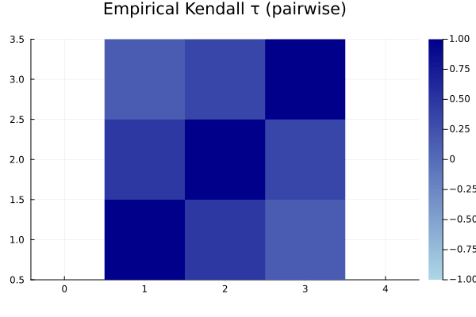
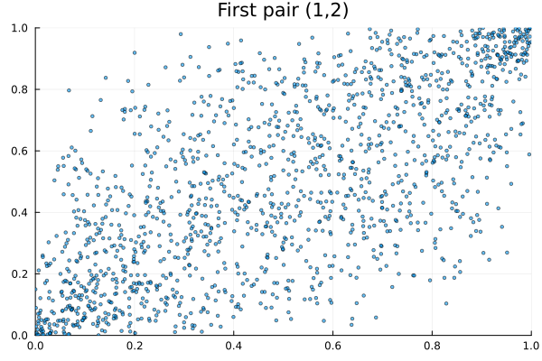

Vines Copulas
Do not hesitate to join the discussion on our GitHub!
One notable class of copulas is the Vines copulas. These distributions use a graph of conditional distributions to encode the distribution of the random vector. To define such a model, working with conditional densities, and given any ordered partition $\bm i_1, ..., \bm i_p$ of $1, ..., d$, we write:
\[f(\bm x) = f(x_{\bm i_1}) \prod\limits_{j=1}^{p-1} f(x_{\bm i_{j+1}} | x_{\bm i_j}).\]
Of course, the choice of partition, its order, and the conditional models is left to the practitioner. The goal when dealing with such dependency graphs is to tailor the graph to reduce the approximation error, which can be a challenging task. There exist simplifying assumptions that help with this, and we refer to [7, 44–48] for a deep dive into vine theory, along with results and extensions.
Visual hints (work in progress)
using Copulas, Plots, StatsBase
# As a simple proxy, look at pairwise τ to guide first tree choices
C = GaussianCopula([1.0 0.7 0.2; 0.7 1.0 0.5; 0.2 0.5 1.0])
U = rand(C, 1500)
τ = StatsBase.corkendall(U')
heatmap(τ; title="Empirical Kendall τ (pairwise)", aspect_ratio=1, c=:blues, clim=(-1,1))
# Show a simple pair-copula composition idea via partial residuals (illustrative)
scatter(U[1,:], U[2,:]; ms=2, alpha=0.6, xlim=(0,1), ylim=(0,1), title="First pair (1,2)", legend=false)
- [7]
- C. Czado. Analyzing Dependent Data with Vine Copulas: A Practical Guide With R. Vol. 222 of Lecture Notes in Statistics (Springer International Publishing, Cham, 2019).
- [44]
- F. Durante, G. Puccetti, M. Scherer and S. Vanduffel. The Vine Philosopher. Dependence Modeling 5, 256–267 (2017).
- [45]
- T. Nagler and C. Czado. Evading the Curse of Dimensionality in Nonparametric Density Estimation with Simplified Vine Copulas. Journal of Multivariate Analysis 151, 69–89 (2016).
- [46]
- T. Nagler. Nonparametric Estimation in Simplified Vine Copula Models. Ph.D. Thesis, Technische Universität München (2018).
- [47]
- C. Czado, S. Jeske and M. Hofmann. Selection Strategies for Regular Vine Copulae. Journal de la Société Française de Statistique 154, 174–191 (2013).
- [48]
- B. Gräler. Modelling Skewed Spatial Random Fields through the Spatial Vine Copula. Spatial Statistics 10, 87–102 (2014).